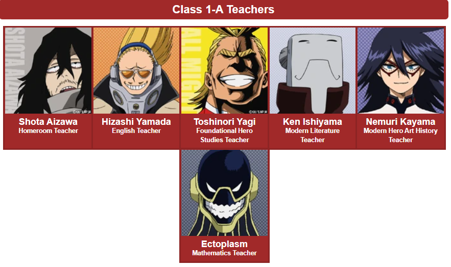
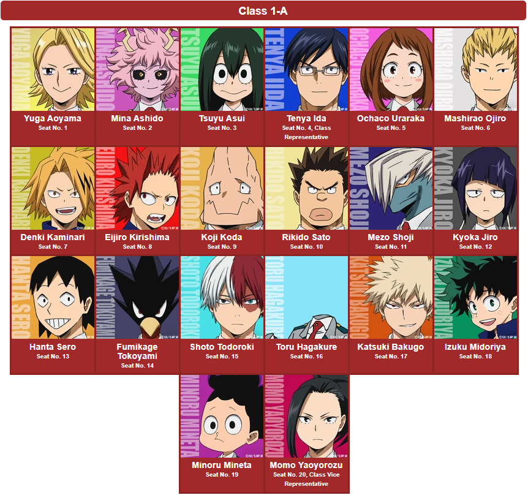

My Hero Academia

About My Hero Academia
My Hero Academia (Japanese: 僕のヒーローアカデミア, Hepburn: Boku no Hīrō Akademia) is a Japanese superhero manga series written and illustrated by Kōhei Horikoshi. It has been serialized in Weekly Shōnen Jump since July 2014, with its chapters additionally collected into 29 tankōbon volumes as of January 2021. The story follows Izuku Midoriya, a boy born without superpowers (called Quirks) in a world where they have become commonplace, but who still dreams of becoming a superhero himself. He is scouted by All Might, Japan's greatest hero, who shares his Quirk with Midoriya after recognizing his potential, and later helps to enroll him in a prestigious high school for heroes in training. The manga was adapted into an anime television series by Bones. Its first season aired in Japan from April to June 2016, followed by a second season from April to September 2017, then a third season from April to September 2018, a fourth season from October 2019 to April 2020, and a fifth season is scheduled to premiere in March 2021. An animated film titled My Hero Academia: Two Heroes was released in August 2018. A second animated film titled My Hero Academia: Heroes Rising was released in December 2019. A third animated film is set to be released in summer 2021. There are plans for a live-action film by Legendary Entertainment. The series has been licensed for an English-language release by Viz Media and began serialization in their weekly digital manga anthology Weekly Shonen Jump in February 2015. Shueisha began to simulpublish the series in English on the website and app Manga Plus in January 2019. The manga won the 2019 Harvey Award for Best Manga. As of January 2021, the manga had over 30 million copies in circulation. Both the manga and anime adaptation have received an overwhelming positive response from both critics and audiences, and are considered one of the best of the 2010s.
About The Main Charecter i.e. Izuku Midoriya

Izuku Midoriya (緑みどり谷や出いず久く Midoriya Izuku?), also known as Deku (デク Deku?), is the main protagonist of the My Hero Academia manga and anime series. Even though Izuku was born Quirkless, he manages to catch the attention of the legendary hero All Might due to his innate heroism and a strong sense of justice, and has since become his close pupil as well as a student in Class 1-A at U.A. High School. All Might passed on his Quirk to Izuku, making him the ninth holder of One For All.
About other people in Class 1-A at U.A High School.

Class 1-A (1年ねんAエー組ぐみ Ichi-nen Ē-gumi?) is the homeroom class of the main protagonist Izuku Midoriya and one of the main settings of My Hero Academia.
Students and Teachers of Class 1-A
Teachers

